Computadora (Computer, ordenador): Máquina electrónica que recibe y procesa datos para convertirlos en información útil. Está hecha de circuitos integrados construidos a partir de transistores, además de algunos otros dispositivos eléctricos y electrónicos tales como resistencias, capacitores e inductores.
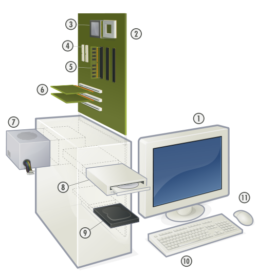Una computadora esta compuesta de 4 módulos principales:
Computadora:
- Procesador (CPU)
- Memoria
- Dispositivos de entrada/salida
- Unidad de almacenamiento
Procesador: También conocido como microprocesador (por su tamaño) o CPU (Unidad Central de Procesamiento), es la parte central (“cerebro”) de una computadora y es capaz de realizar operaciones aritméticas a gran velocidad. Actualmente está construido por millones transistores en un material de silicio.
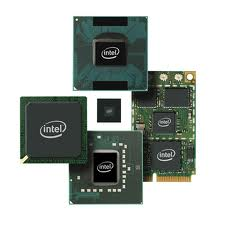 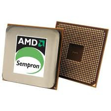El procesador es el responsable de llevar a cabo el control de todos los demás dispositivos que forman parte de la computadora, realizar las operaciones que los programas en ejecución le solicitan. El procesador lee y escribe datos de la memoria, lugar donde los programas en ejecución podrán acceder a ellos.
Memoria: Componente electrónico de una computadora que es capaz de almacenar información por un tiempo determinado. Las memorias de computadora proporcionan una de las principales funciones de la computación moderna, la retención o almacenamiento de información.
Memoria RAM: o Memoria de Acceso Aleatorio es aquella memoria donde el procesador almacena información del sistema operativo y de todos los programas en ejecución. Se denomina acceso aleatorio porque se puede leer o escribir en una posición de memoria con un tiempo de espera igual para cualquier posición, no siendo necesario seguir un orden para acceder a la información de la manera más rápida posible.

La memoria RAM es volátil, es decir que necesita tener energía para almacenar la información, si se interrumpe la alimentación la información se pierde.
Memoria ROM: o Memoria de Solo Lectura es un tipo de memoria especial en donde se guardan programas necesarios para que la haga los diagnósticos iniciales y también que el sistema operativo pueda iniciar.
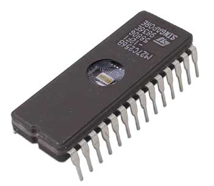Este tipo de memorias contienen celdas programables que no son volátiles, es decir que pueden almacenar información sin necesidad de una fuente de alimentación. El proceso de escritura de información en la memoria de sólo lectura se realiza mediante un equipo especial llamado programador, en el cual las celdas son codificadas para almacenar "0" ó "1".
Dispositivos de Entrada/Salida: Estos son los dispositivos con los que una computadora interactúa con el exterior, ya sea un usuario, una computadora o algún otro dispositivo electrónico.
Algunos ejemplos de dispositivos de entrada:
- Teclado
- Ratón
- Scanner
- Joystick
- Lapiz óptico
- Pantalla táctil
- Webcam
Algunos ejemplos de dispositivos de salida:
- Monitor
- Bocinas
- Impresora
- Proyector
Algunos dispositivos mixtos:
- Módem
- Tarjeta de Red
- Unidades de almacenamiento (CD, DVD, BluRay Disc, Unidad USB, disco duro (interno o externo), etc.)
Unidad de almacenamiento: Dispositivo en el cual se realizan las operaciones de lectura o escritura de los medios o soportes donde se almacenan o guardan, lógica y físicamente, los archivos de un sistema informático. La capacidad de almacenamiento de estos dispositivos se mide en Bytes, donde 1 Byte equivale a 8 bits.
En esta categoría se encuentran todos los dispositivos siguientes:
- Disco Duro
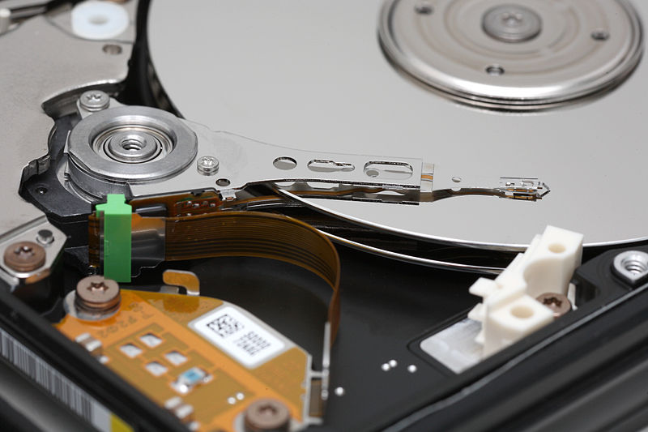
Unidad de Estado Solido SSD

Disco flexible (disquete)
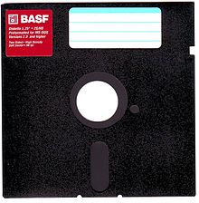
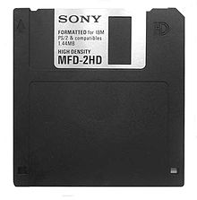
Zip Drive
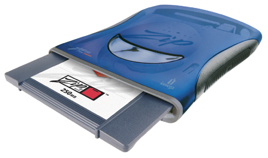
CD / DVD / BluRay Disc
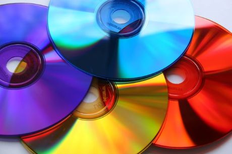
Tarjetas de memoria
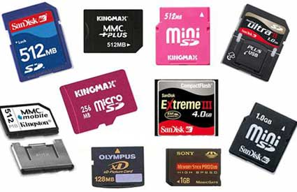
Memoria USB

-
Unidad de Estado Sólido (SSD)
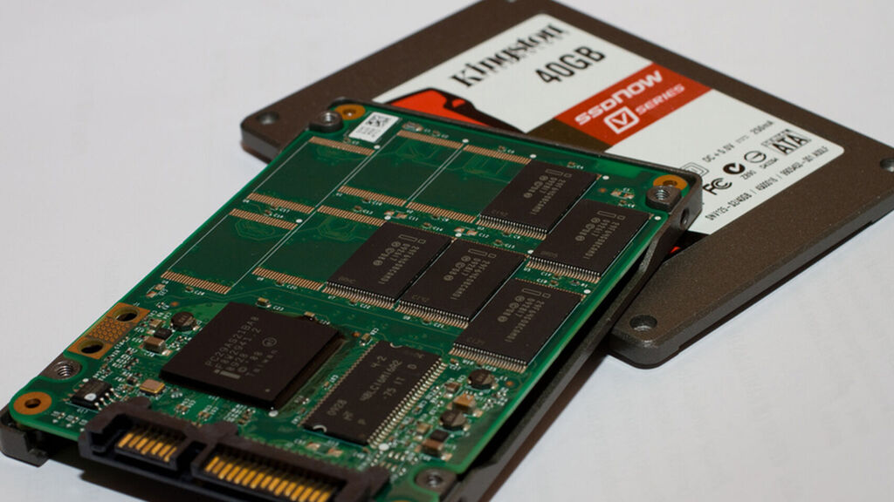
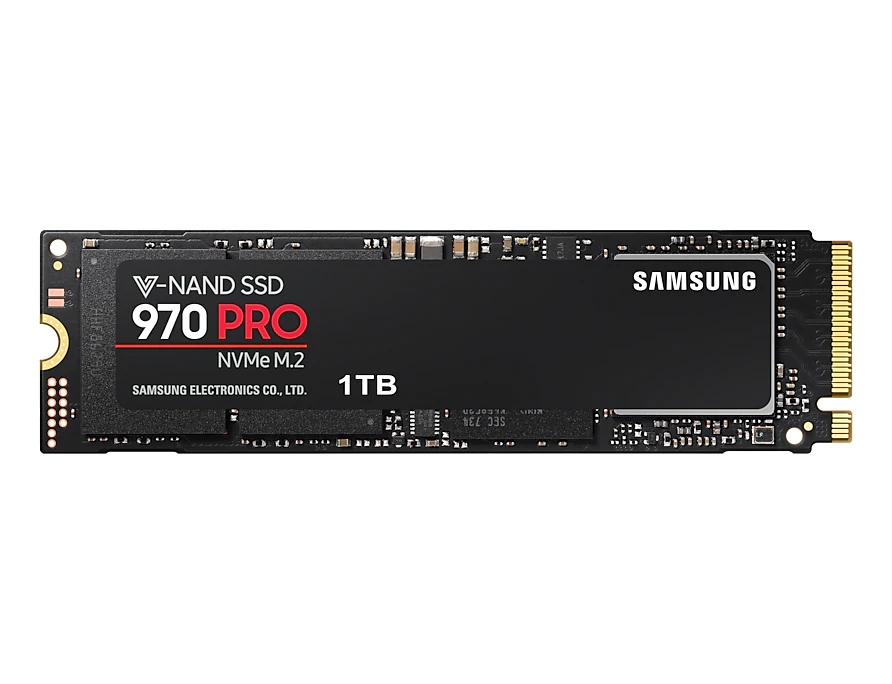
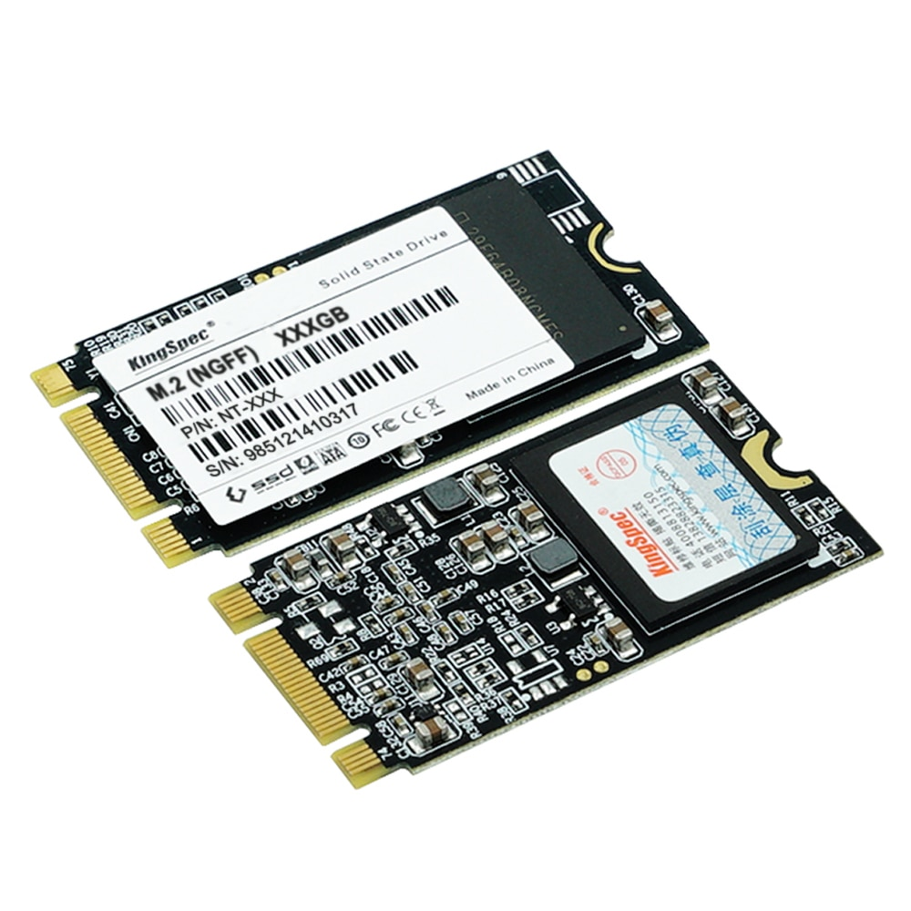